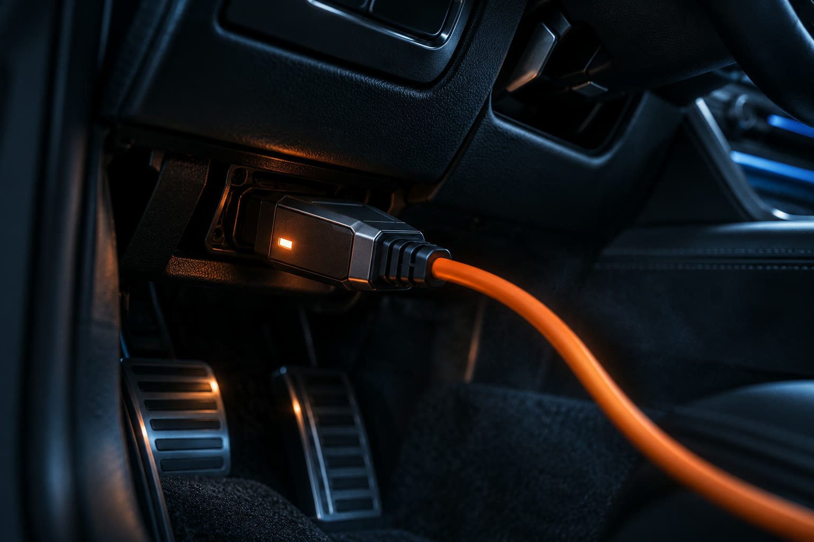
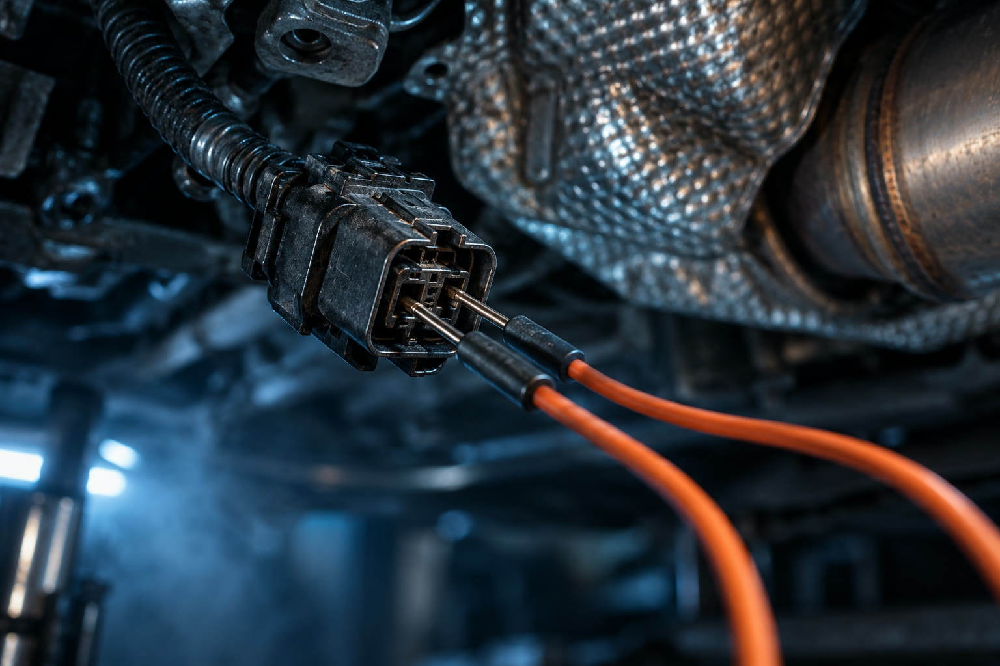
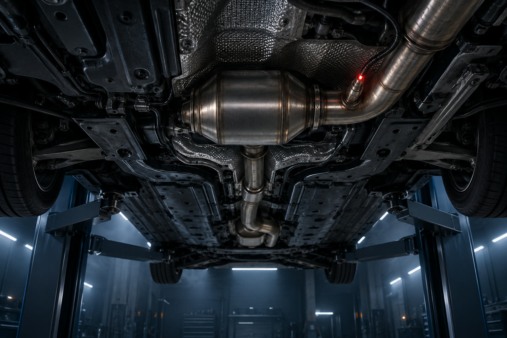

01
Brancher
On se connecte à tous les calculateurs avec des outils de diagnostic dédiés aux marques allemandes, pas une simple valise générique.
Diagnostic électronique · voitures allemandes
Pièces changées, code effacé. La panne, elle, est toujours là.
On branche. On scanne. On lit ce que la voiture dit vraiment.
Mercedes, BMW, Audi, Volkswagen, Porsche. Diagnostic spécialisé à Beni Mellal.
Diagnostic électronique · voitures allemandes
Diagnostic électronique spécialisé pour voitures allemandes, à Beni Mellal. On teste, on prouve, puis on répare.
Ça vous parle ?
« On a changé le capteur. Puis le faisceau. Le voyant est revenu. »
« Le garage a effacé le code. Trois jours plus tard, rebelote. »
« Personne n'a pu me dire ce qui ne va pas, vraiment. »
Une voiture allemande parle. Il faut juste le bon outil pour l'écouter.
La méthode

01
On se connecte à tous les calculateurs avec des outils de diagnostic dédiés aux marques allemandes, pas une simple valise générique.

02
Codes défaut, données en direct, tests de circuits. On vérifie le signal, pas seulement le message.

03
On vous montre le défaut et la cause. Devis écrit avant toute réparation.
Essayez
Une voiture allemande, voyant AdBlue allumé. Maintenez le bouton et suivez le scan, système par système.
Défaut isolé : capteur NOx aval. Pas un catalyseur changé au hasard.
Ce qu'on diagnostique
Ratés, perte de puissance, mode dégradé, voyant moteur. Lecture complète du calculateur et des données en direct.
SCR, capteurs NOx, dosage AdBlue, FAP, vanne EGR. Les pannes modernes les plus mal diagnostiquées.
DSG, 7G-Tronic, ZF. Défauts, à-coups, réinitialisation et adaptations.
Voyants de sécurité, capteurs et calculateurs.
Pannes intermittentes, batterie qui se vide, modules qui ne communiquent plus.
Calculateur remplacé, codage et adaptations après échange.
Nos engagements
On vous montre l'écran et les valeurs mesurées. Rien de caché.
Le prix est clair avant qu'on touche à quoi que ce soit.
Une pièce est remplacée seulement si un test montre qu'elle est en cause.
Ce qui ne va pas, pourquoi, et ce que ça coûte de le réparer.
Questions
Oui. C'est notre cas le plus fréquent. On repart de zéro, avec des mesures, pas des suppositions.
Il ne faut pas attendre. Sur beaucoup de modèles, un compte à rebours limite la puissance puis bloque le redémarrage. La cause est souvent un capteur NOx, le dosage ou la qualité de l'AdBlue. On mesure avant de changer quoi que ce soit.
Le prix est annoncé avant le branchement. Écrivez-nous sur WhatsApp avec le modèle et le souci, on vous répond avec un tarif clair.
On travaille avec des outils de diagnostic dédiés aux marques allemandes, capables de lire tous les calculateurs et de coder les pièces remplacées.
Oui, le défaut reste en mémoire. Mieux vaut le lire avant qu'il ne revienne au mauvais moment.
Rendez-vous
Envoyez le modèle et le symptôme sur WhatsApp. On vous répond avec un créneau et un prix.
Diagnostiquer ma voitureAdresse
Beni Mellal, Maroc · À compléter
Horaires
À compléter
À compléter